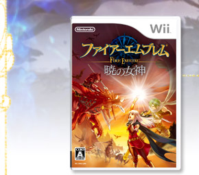
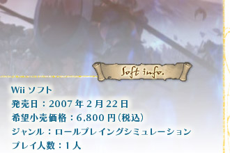
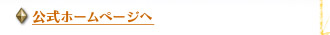
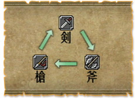
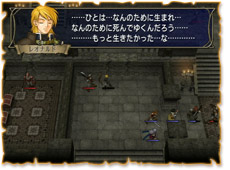

|  |   |
|
Ｗｉｉリモコンを直感的に動かして手軽に遊べるタイトルがそろっているＷｉｉですが、そろそろじっくりと時間をかけてクリアしていく歯応えのあるタイトルにも挑戦したくはありませんか？ そんな人にオススメなのが『ファイアーエムブレム 暁の女神』です。将棋やチェスのような思考派ゲームというと少し難しいイメージを持たれるかもしれませんが、初心者でもスムーズに遊べる親切機能が満載だとか。幅広いユーザーに向けてどのように遊びやすくなっているのか、さっそくレポート！ |
まず難易度が複数用意されているのが好印象です。もっと手ごわいゲームをという、シリーズファンの期待に応えつつ、初心者でも安心して遊べるシステムになっています。
初心者にオススメのノーマルレベルでプレイしてみましょう。セーブファイルが６つあるのも嬉しいかも。章ごとに細かくセーブできるから、色々なことを試してみたり少し前のマップに戻るなどのやり直しも簡単です。 物語の進行に合わせてところどころで会話入りの壮大な雰囲気のムービーが盛り上げてくれますよ。ノーマルレベルは敵ユニットの数が少ないうえにパラメータもやや低く設定してあるためか、序盤は短い時間でさくさくクリアできます。初めて遊ぶ方には、このテンポよく短い時間でプレイできるのが嬉しいですね。
また、プレイしているとゲームシステムの基本解説をしてくれる指南モードが自動的に登場します。これがなかなか凝った作りで、自軍の状況に合わせて的確なタイミングで解説を始めてくれるのです。
例えば、序盤はユニットの動かし方から始まって敵ユニットへの有効な攻撃パターン、途中で新しい仲間やアイテムが加わると、それらの説明がすかさず登場するという感じです。解説はどれも短く簡潔にまとめられていてゲームの進行を妨げない配慮も感じます。
指南の数々はマップメニューに一覧がまとめられており、いつでも読み返すことができるのも親切ですね。すぐにその場で読まずに後から読み返すなんてことも可能です。前作のゲームキューブ版からますます充実している指南モードですが、この機能のおかげで誰もがスムーズに楽しめるようになったと思います。
このゲームの醍醐味の１つは、やはりユニットの育成にあります。仲間はストーリーが進むと増えていき、新しい能力を持ったユニットが部隊に加わることで戦略パターンも多彩になっていきます。経験値が平均的に行き渡るように上手に配分するのがオススメですが、お気に入りのユニットを中心に戦わせるのも挑戦しがいがありますよ。
このゲームで育成に夢中になるのはユニットとしての戦闘能力はもちろん、外見やキャラクターの雰囲気などパラメータや数字ではない部分に感情移入できるからだと思います。また特殊能力をユニットに加えることができるスキルや強力な武器を作れる練成など、部隊のウィークポイントを補強する手段も色々と用意されていて、初心者の方でも比較的自由にユニットを育てることができるはずですよ。
じつに多くの人物が登場するこのゲーム、育成ばかりに目を向けていると壮大なストーリーの全容をつかむのがおろそかになりがちですが、そのフォローは用語集と人物相関図におまかせです。
登場した敵味方が一覧できる人物相関図には攻略のヒントが隠されているかも。ユニット同士が近くにいると能力を高め合う支援効果や敵軍にいる特定ユニットに仲間に加わるように説得できるのは、親密な関係にある人物で可能となる場合が多いからです。
このように親切な機能が満載で、まさに誰でも遊べる『ファイアーエムブレム』と感じる最新作です。いままで難しいという印象を持っていた人は、試しにぜひプレイしてみてください。とても簡単に遊べるのに、マップを攻略できたときの達成感は格別です！
| 
|
||
| 
|
||
|
|
||
| 1-2.インテリジェットシステムズ 特別レポートへ | N.O.M2007年3月号のトップページへ |